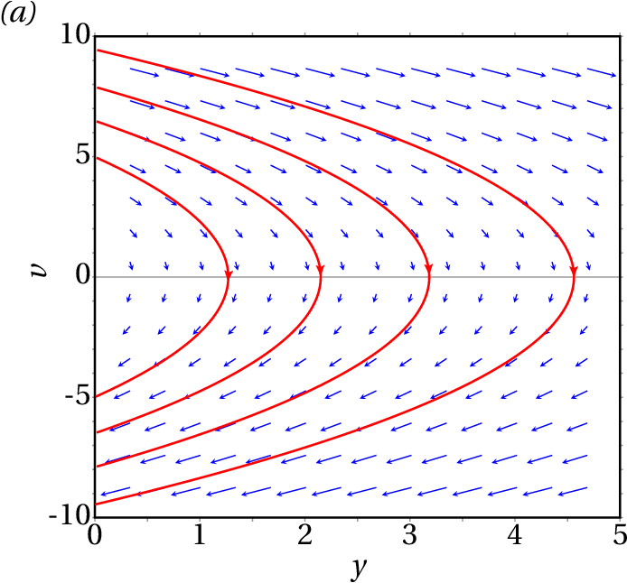
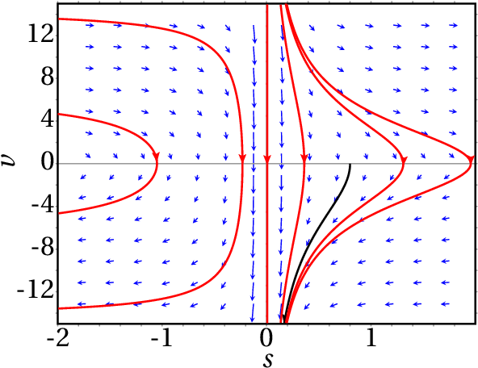
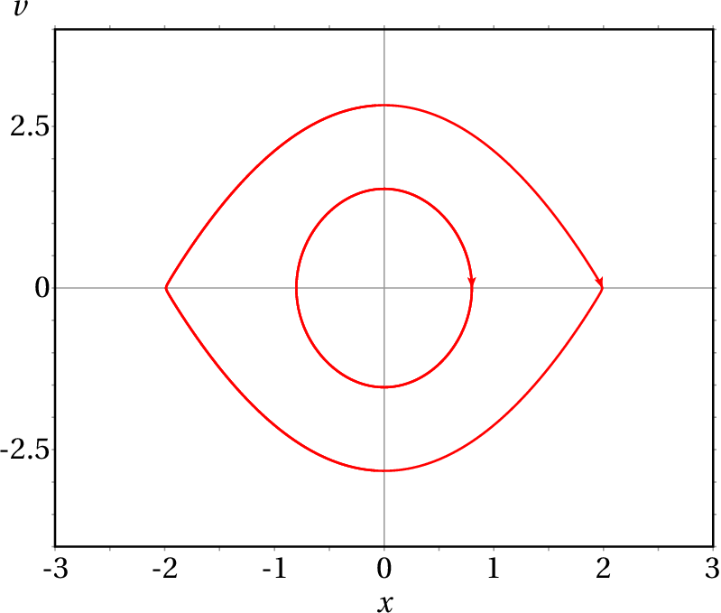

Uma bola com 0.150 kg é lançada verticalmente para cima, desde
(o eixo dos
aponta para cima, na vertical). Desprezando a
resistência do ar, a energia permanece constante.
(a) Represente o retrato de fase, para
, mostrando 4
curvas de evolução diferentes (use o valor 9.8 m/s2 para
). Para cada curva, explique o significado dos pontos em que a
curva interseta os eixos.
(a) Explique como seria, no retrato de fase da alínea anterior,
a curva de evolução de uma bola largada em queda livre, que bate no
chão sendo projetada novamente para cima.
A equação de movimento da bola é
E as duas equações de evolução são
O retrato de fase obtém-se com o seguinte comando
E o resultado é o seguinte
As quatro curvas de evolução na figura foram obtidas entrando no menu de configuração, escrevendo "1 0" no campo "Trajectory at" e clicando na tecla "Enter" e o mesmo para os pontos "2 0", "3 0" e "4 0". Os intervalos para e foram escolhidos, após algumas tentativas, de forma a mostrar bem as quatro curvas, para valores positivos da altura .
O ponto onde cada curva interseta o eixo corresponde ao instante em que a bola atinge a sua altura máxima e a velocidade é nula. Os dois pontos onde a curva interseta o eixo são o instante inicial em que a bola é lançada desde , com velocidade positiva, e o instante em que a bola cai regressando a = 0, com velocidade negativa. Por exemplo, a curva mais à direta apresentada no retrato de fase corresponde a quando a bola é lançada desde com velocidade aproximadamente 8.8 m/s, atingindo a altura máxima de 4 m e caindo novamente até onde chega com velocidade igual a m/s.
(b) Quando a curva de evolução chega até o ponto com velocidade negativa (a bola bate no chão), a curva continua num arco elíptico no lado negativo de , que corresponde à ação da força elástica enquanto a bola está em contacto com o chão, sendo deformada e recuperando logo a sua forma esférica inicial (oscilador harmónico simples, admitindo que não há perdas de energia durante a deformação). O arco elíptico descreve metade de uma elipse, terminando no ponto inicial da curva de evolução, com e velocidade positiva e a curva repete-se indefinidamente. Quanto mais rígida for a bola, menor será o semieixo do arco elíptico no lado negativo do eixo .
Em todos os problemas do capítulo 1, diga quais correspondem a sistemas autónomos ou não autónomos e conservativos ou não conservativos. Represente o retrato de fase do sistema do problema 6, mostrando a curva de evolução com as condições iniciais dadas.
Para determinar se um sistema com um grau de liberdade é ou não autónomo, há que conhecer a expressão da aceleração tangencial. No problema 1 essa expressão é desconhecida, mas nos restantes problemas a expressão de é dada ou pode ser calculada. As respostas mostram que no problema 5, e no problema 11, . No problema 7, o gráfico mostra que , onde e são constantes; derivando os dois lados dessa equação obtém-se a expressão da aceleração tangencial:
Como tal, há quatro problemas (2, 4, 5 e 11), em que a expressão da aceleração é uma função que depende do tempo. Isso implica que os sistemas nesses 4 problemas não são autónomos e, como tal, também não são conservativos.
Nos restantes 6 problemas (3, 6, 7, 8, 9 e 10), o respetivo sistema é autónomo, porque a expressão da aceleração (equação de movimento) não depende do tempo. Nesses 6 casos a equação de movimento, , escreve-se como o sistema de duas equações de evolução:
E a divergência da velocidade de fase será:
Unicamente no problema 10 a expressão da aceleração tangencial, , depende de , ou seja, a divergência é diferente de zero e, como tal, o sistema não é conservativo.
Nos problemas 3, 6, 7, 8 e 9, o sistema é conservativo, porque a expressão não depende realmente de , ou seja, a divergência é nula.
O retrato de fase do problema 6 obtém-se com o seguinte comando
E o resultado é o seguinte
A curva de evolução correspondente às condições iniciais dadas ( m e ) foi obtida entrando no menu de configuração, mudando o campo "direction" para "forward", a cor no campo "fieldlines" para "black", escrevendo "0.8 0" no campo "Trajectory at" e clicando na tecla "Enter".
Uma partícula com massa de 1 kg desloca-se ao longo do eixo dos
. Em unidades SI, a força tangencial sobre a partícula é dada
pela expressão
.
(a) Determine os pontos de equilíbrio do sistema.
(b) Encontre as expressões para a energia potencial e a energia
mecânica, em função da posição
e da velocidade
.
(c) Escreva as equações de evolução e diga que tipo de sistema
dinâmico representam.
(d) Caracterize cada um dos pontos de equilíbrio.
(e) Determine se o sistema tem ciclos, órbitas homoclínicas ou
órbitas heteroclínicas e, nos casos afirmativos represente uma dessas
curvas no retrato de fase.
(a) Os pontos de equilíbrio são os pontos onde a velocidade e a aceleração são nulas, ou seja, onde a força é nula. Fatorizando a expressão da força (pode também usar-se o comando solve do Maxima):
Conclui-se que há 3 pontos de equilíbrio, em , e , com . No espaço de fase ( , ), as coordenadas dos pontos de equilíbrio são ( , 0), (0, 0) e (2, 0).
(b) A energia potencial é igual a uma primitiva qualquer da expressão da força, multiplicada por
E a expressão da energia mecânica é:
(c) As duas equações de evolução são (unidades SI):
Trata-se de um sistema dinâmico autónomo, porque o tempo não aparece explicitamente no lado direito das equações, e conservativo, porque a divergência da velocidade de fase é:
A função hamiltoniana é, neste caso, a própria energia mecânica.
(d) O gráfico da força é:
E mostra os três pontos de equilíbrio (raízes da função ). Nos pontos e , a força é negativa ao lado esquerdo do ponto e positiva ao lado direito; isso quer dizer que na vizinhança do ponto de equilíbrio, a força aponta no sentido oposto do ponto e, como tal, os pontos de equilíbrio ( , 0) e (2, 0) no espaço de fase são instáveis.
No ponto , a força é positiva no lado esquerdo, ou seja, aponta no sentido de , e negativa no lado direito: também aponta no sentido de . Como tal, o ponto (0, 0) no espaço de fase é ponto de equilíbrio estável.
(e) Os ciclos e órbitas encontram-se mais facilmente analisando o gráfico da energia potencial:
Se a energia mecânica for maior que 0 e menor que 4, o sistema pode estar a oscilar à volta do ponto de equilíbrio em . Como tal, existem infinitos ciclos. Se a energia mecânica for exatamente igual a 4, há seis possíveis movimentos:
As curvas de evolução correspondentes aos últimos dois movimentos na lista anterior formam uma órbita heteroclínica. Não existem órbitas homoclínicas; para que existissem seria necessário que houvesse um nível de energia mecânica que passasse por apenas um ponto de equilíbrio instável e por um ponto de retorno, mas isso não acontece no gráfico de .
O retrato de fase obtém-se com o seguinte comando (a opção vectors é usada neste caso para que não seja mostrado o campo de direções):
Se no instante inicial a partícula estiver na região com velocidade zero, ficará oscilando em torno do ponto . Como tal, para mostrar um ciclo no gráfico produzido por plotdf basta clicar num ponto com coordenada e no intervalo ]-2, 2[. Ou, com maior precisão, entra-se no menu de configuração e escrevem-se as coordenadas e do estado inicial, separadas por espaço; por exemplo: 0.8 0. A seguir clica-se na tecla "Enter" e aparecerá o respetivo ciclo no gráfico. A trajetória heteroclínica pode ser traçada usando como estado inicial um ponto próximo dum dos pontos de equilíbrio instável (-2, 0) ou (2, 0). No entanto, a instabilidade do ponto faz com que o método numérico usado por plotdf para traçar a trajetória seja instável. É necessário experimentar com diferentes valores do estado inicial; o resultado na figura seguinte foi obtido usando como estado inicial (1.99, 0).
A figura mostra o retrato de fase do sistema dinâmico com equações de evolução:
(a) A primeira componente da velocidade de fase, , é nula quando for igual a 0, 1 ou −1. Existem então unicamente 3 pontos de equilíbrio, (0, 0), (−1, 1) e (−1, −1), que aparecem todos na figura e, como tal, as curvas de evolução importantes já estão todas na figura. A figura mostra que não existe nenhuma órbita homoclínica, existem infinitos ciclos em torno da origem e uma órbita heteroclínica entre os pontos (−1, 1) e (−1, −1).
(b) As duas parábolas são realmente 2 pontos de equilíbrio e 6 curvas de evolução diferentes, que se aproximam assimptoticamente ou se afastam desses dois pontos, sem tocá-los. As curvas de evolução nunca podem cruzar-se.
A equação de movimento de um pêndulo simples é (problema 6 do capítulo 6)
(a) Introduzindo a velocidade angular , a equação de movimento transforma-se num sistema de duas equações de primeira ordem
b) Substituindo as equações de evolução nas equações de Hamilton obtém-se
A primeira equação implica que é igual a , mais uma função que depende de . Derivando essa expressão em ordem a e substituindo na segunda equação acima, obtém-se
e a função hamiltoniana é
observe-se que é igual à energia mecânica , dividida pelo momento de inércia .
(c) A energia potencial é igual a uma constante negativa vezes . Assim sendo, o seu gráfico tem a mesma forma do gráfico de , mas oscila entre e , em vez de −1 e 1. O gráfico tem mínimos (pontos de equilíbrio estável) em 0, , ,... e pontos máximos (pontos de equilíbrio instável) em , ,... Qualquer valor de entre e produz um segmento horizontal que corta o gráfico de em dois pontos e, assim sendo, corresponde a um ciclo. A recta horizontal passa por todos os pontos máximos de e, portanto, corresponde a uma órbita heteroclínica entre e , outra órbita heteroclínica entre e , etc. Não existem órbitas homoclínicas porque qualquer segmento na reta começa e termina em dois pontos máximos diferentes e não interseta a curva em nenhum outro ponto.